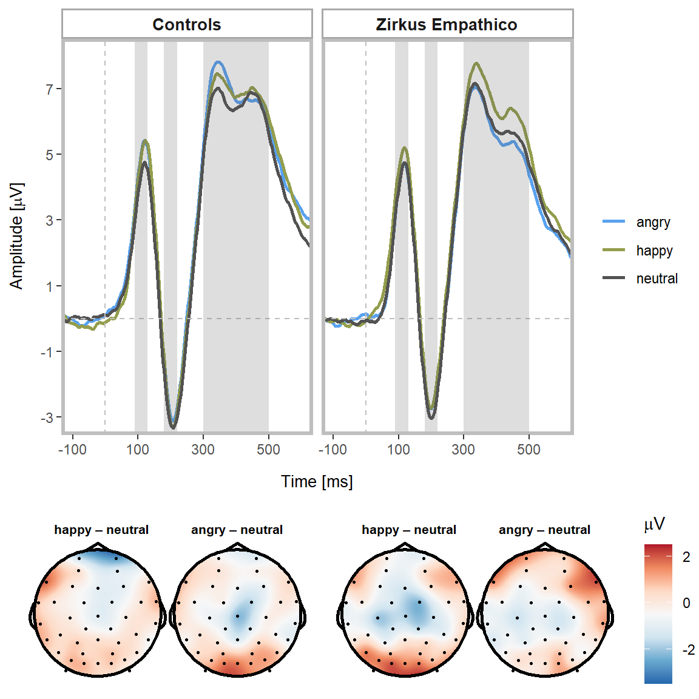

trial_count = gather(qn_data, trial, count, hap_trials:neu_trials, factor_key = TRUE)
trial_count = subset(trial_count, select = c(trial, count))
# Calculate one-way ANOVA to test equality of trial numbers
trial.aov = aov(count ~ trial, data = trial_count)
# Extract values to present
trial.aov.sum = summary(trial.aov)
trial.aov.sum = data.frame(trial.aov.sum[[1]])For the analysis of the P1, N170 and P3 at T2, we computed separate analyses of variance (ANOVAs) with ERP amplitude as dependent variable, training as between factor, and facial expressions (happy vs. angry vs. neutral) as within factor.
ERP trajectories and associated topographies are displayed here:
# Topoplots P1 - Emotion effects
ga_topo_long = gather(ga_emo_wide, electrode, amplitude, Fp1:Oz, factor_key = TRUE)
# Rename A1/A2
names(ga_topo_long)[names(ga_topo_long) == "A1"] = "TP9"
names(ga_topo_long)[names(ga_topo_long) == "A2"] = "TP10"
# Plot topoplots for happy
Topo_Emo_Hap = subset(ga_topo_long, emo == 1)
# Plot topoplots for neutral
Topo_Emo_Neu = subset(ga_topo_long, emo == 3)
# Plot topoplots for angry
Topo_Emo_Ang = subset(ga_topo_long, emo == 2)
# Calculate difference score angry-neutral
Topo_Diff_Ang_Neu = data.frame(time = Topo_Emo_Hap[, 1], electrode = Topo_Emo_Hap[,
3], amplitude = Topo_Emo_Ang$amplitude - Topo_Emo_Neu$amplitude)
# Calculate difference score happy-neutral
Topo_Diff_Hap_Neu = data.frame(time = Topo_Emo_Hap[, 1], electrode = Topo_Emo_Hap[,
3], amplitude = Topo_Emo_Hap$amplitude - Topo_Emo_Neu$amplitude)
# Calculate difference score happy-angry
Topo_Diff_Hap_Ang = data.frame(time = Topo_Emo_Hap[, 1], electrode = Topo_Emo_Hap[,
3], amplitude = Topo_Emo_Hap$amplitude - Topo_Emo_Ang$amplitude)
## P1s
# Select time windows
Topo_Diff_Ang_Neu_P1 = subset(Topo_Diff_Ang_Neu, time >= 90 & time <= 130)
Topo_Diff_Hap_Neu_P1 = subset(Topo_Diff_Hap_Neu, time >= 90 & time <= 130)
Topo_Diff_Hap_Ang_P1 = subset(Topo_Diff_Hap_Ang, time >= 90 & time <= 130)
# Add electrode information
Topo_Diff_Ang_Neu_P1 = electrode_locations(Topo_Diff_Ang_Neu_P1, electrode = "electrode",
drop = FALSE, montage = NULL)
Topo_Diff_Hap_Neu_P1 = electrode_locations(Topo_Diff_Hap_Neu_P1, electrode = "electrode",
drop = FALSE, montage = NULL)
Topo_Diff_Hap_Ang_P1 = electrode_locations(Topo_Diff_Hap_Ang_P1, electrode = "electrode",
drop = FALSE, montage = NULL)
# Draw topographies
topo_diff_ang_neu_P1 = ggplot(Topo_Diff_Ang_Neu_P1, aes(x = x, y = y, fill = amplitude,
label = electrode)) + ggtitle("angry – neutral") + geom_topo(grid_res = 300,
interp_limit = "head", chan_markers = "point", chan_size = 0.5, head_size = 0.9) +
scale_fill_distiller(palette = "RdBu", limits = c(-1.5, 2.5)) + theme_void() +
coord_equal() + labs(fill = expression(paste("Amplitude (", mu, "V)"))) + theme(legend.position = "none",
plot.title = element_text(size = 8, face = "bold", hjust = 0.5))
# Draw topographies
topo_diff_hap_neu_P1 = ggplot(Topo_Diff_Hap_Neu_P1, aes(x = x, y = y, fill = amplitude,
label = electrode)) + ggtitle(" happy – neutral") + geom_topo(grid_res = 300,
interp_limit = "head", chan_markers = "point", chan_size = 0.5, head_size = 0.9) +
scale_fill_distiller(palette = "RdBu", limits = c(-1.5, 2.5)) + theme_void() +
coord_equal() + labs(fill = expression(paste("Amplitude (", mu, "V)"))) + theme(legend.position = "none",
plot.title = element_text(size = 8, face = "bold", hjust = 0.5))
# Draw topographies
topo_diff_hap_ang_P1 = ggplot(Topo_Diff_Hap_Ang_P1, aes(x = x, y = y, fill = amplitude,
label = electrode)) + ggtitle(" happy – angry") + geom_topo(grid_res = 300,
interp_limit = "head", chan_markers = "point", chan_size = 0.5, head_size = 0.9) +
scale_fill_distiller(palette = "RdBu", limits = c(-1.5, 2.5)) + theme_void() +
coord_equal() + labs(fill = expression(paste("Amplitude (", mu, "V)"))) + theme(legend.position = "none",
plot.title = element_text(size = 8, face = "bold", hjust = 0.5))
# Display plots
fig_topo_P1_emo = cowplot::plot_grid(topo_diff_hap_neu_P1, topo_diff_ang_neu_P1,
topo_diff_hap_ang_P1, ncol = 3, rel_widths = c(1, 1, 1))
############
# Topoplots P3 - Group x Emotion effects
# Control group
ga_topo_long_cg = gather(topo_emo_cg, electrode, amplitude, Fp1:Oz, factor_key = TRUE)
# Rename A1/A2
names(ga_topo_long_cg)[names(ga_topo_long_cg) == "A1"] = "TP9"
names(ga_topo_long_cg)[names(ga_topo_long_cg) == "A2"] = "TP10"
# Plot topoplots for happy
Topo_Emo_Hap_CG = subset(ga_topo_long_cg, emo == 1)
# Plot topoplots for neutral
Topo_Emo_Neu_CG = subset(ga_topo_long_cg, emo == 3)
# Plot topoplots for angry
Topo_Emo_Ang_CG = subset(ga_topo_long_cg, emo == 2)
# Calculate difference score angry-neutral
Topo_Diff_Ang_Neu_CG = data.frame(time = Topo_Emo_Hap_CG[, 1], electrode = Topo_Emo_Hap_CG[,
3], amplitude = Topo_Emo_Ang_CG$amplitude - Topo_Emo_Neu_CG$amplitude)
# Calculate difference score happy-neutral
Topo_Diff_Hap_Neu_CG = data.frame(time = Topo_Emo_Hap_CG[, 1], electrode = Topo_Emo_Hap_CG[,
3], amplitude = Topo_Emo_Hap_CG$amplitude - Topo_Emo_Neu_CG$amplitude)
# Calculate difference score happy-angry
Topo_Diff_Hap_Ang_CG = data.frame(time = Topo_Emo_Hap_CG[, 1], electrode = Topo_Emo_Hap_CG[,
3], amplitude = Topo_Emo_Hap_CG$amplitude - Topo_Emo_Ang_CG$amplitude)
# Select time windows
Topo_Diff_Ang_Neu_CG_P3 = subset(Topo_Diff_Ang_Neu_CG, time >= 300 & time <= 500)
Topo_Diff_Hap_Neu_CG_P3 = subset(Topo_Diff_Hap_Neu_CG, time >= 300 & time <= 500)
Topo_Diff_Hap_Ang_CG_P3 = subset(Topo_Diff_Hap_Ang_CG, time >= 300 & time <= 500)
# Add electrode information
Topo_Diff_Ang_Neu_CG_P3 = electrode_locations(Topo_Diff_Ang_Neu_CG_P3, electrode = "electrode",
drop = FALSE, montage = NULL)
Topo_Diff_Hap_Neu_CG_P3 = electrode_locations(Topo_Diff_Hap_Neu_CG_P3, electrode = "electrode",
drop = FALSE, montage = NULL)
Topo_Diff_Hap_Ang_CG_P3 = electrode_locations(Topo_Diff_Hap_Ang_CG_P3, electrode = "electrode",
drop = FALSE, montage = NULL)
# Draw topographies
Topo_Diff_Ang_Neu_CG_P3_plot = ggplot(Topo_Diff_Ang_Neu_CG_P3, aes(x = x, y = y,
fill = amplitude, label = electrode)) + ggtitle("angry – neutral") + geom_topo(grid_res = 300,
interp_limit = "head", chan_markers = "point", chan_size = 0.5, head_size = 0.9) +
scale_fill_distiller(palette = "RdBu", limits = c(-3.5, 2.5)) + theme_void() +
coord_equal() + labs(fill = expression(paste("Amplitude (", mu, "V)"))) + theme(legend.position = "none",
plot.title = element_text(size = 8, face = "bold", hjust = 0.5))
# Draw topographies
Topo_Diff_Hap_Neu_CG_P3_plot = ggplot(Topo_Diff_Hap_Neu_CG_P3, aes(x = x, y = y,
fill = amplitude, label = electrode)) + ggtitle(" happy – neutral") + geom_topo(grid_res = 300,
interp_limit = "head", chan_markers = "point", chan_size = 0.5, head_size = 0.9) +
scale_fill_distiller(palette = "RdBu", limits = c(-3.5, 2.5)) + theme_void() +
coord_equal() + labs(fill = expression(paste("Amplitude (", mu, "V)"))) + theme(legend.position = "none",
plot.title = element_text(size = 8, face = "bold", hjust = 0.5))
# Training group
ga_topo_long_tg = gather(topo_emo_tg, electrode, amplitude, Fp1:Oz, factor_key = TRUE)
# Rename A1/A2
names(ga_topo_long_tg)[names(ga_topo_long_tg) == "A1"] = "TP9"
names(ga_topo_long_tg)[names(ga_topo_long_tg) == "A2"] = "TP10"
# Plot topoplots for happy
Topo_Emo_Hap_TG = subset(ga_topo_long_tg, emo == 1)
# Plot topoplots for neutral
Topo_Emo_Neu_TG = subset(ga_topo_long_tg, emo == 3)
# Plot topoplots for angry
Topo_Emo_Ang_TG = subset(ga_topo_long_tg, emo == 2)
# Calculate difference score angry-neutral
Topo_Diff_Ang_Neu_TG = data.frame(time = Topo_Emo_Hap_TG[, 1], electrode = Topo_Emo_Hap_TG[,
3], amplitude = Topo_Emo_Ang_TG$amplitude - Topo_Emo_Neu_TG$amplitude)
# Calculate difference score happy-neutral
Topo_Diff_Hap_Neu_TG = data.frame(time = Topo_Emo_Hap_TG[, 1], electrode = Topo_Emo_Hap_TG[,
3], amplitude = Topo_Emo_Hap_TG$amplitude - Topo_Emo_Neu_TG$amplitude)
# Calculate difference score happy-angry
Topo_Diff_Hap_Ang_TG = data.frame(time = Topo_Emo_Hap_TG[, 1], electrode = Topo_Emo_Hap_TG[,
3], amplitude = Topo_Emo_Hap_TG$amplitude - Topo_Emo_Ang_TG$amplitude)
# Select time windows
Topo_Diff_Ang_Neu_TG_P3 = subset(Topo_Diff_Ang_Neu_TG, time >= 300 & time <= 500)
Topo_Diff_Hap_Neu_TG_P3 = subset(Topo_Diff_Hap_Neu_TG, time >= 300 & time <= 500)
Topo_Diff_Hap_Ang_TG_P3 = subset(Topo_Diff_Hap_Ang_TG, time >= 300 & time <= 500)
# Add electrode information
Topo_Diff_Ang_Neu_TG_P3 = electrode_locations(Topo_Diff_Ang_Neu_TG_P3, electrode = "electrode",
drop = FALSE, montage = NULL)
Topo_Diff_Hap_Neu_TG_P3 = electrode_locations(Topo_Diff_Hap_Neu_TG_P3, electrode = "electrode",
drop = FALSE, montage = NULL)
Topo_Diff_Hap_Ang_TG_P3 = electrode_locations(Topo_Diff_Hap_Ang_TG_P3, electrode = "electrode",
drop = FALSE, montage = NULL)
# Draw topographies
Topo_Diff_Ang_Neu_TG_P3_plot = ggplot(Topo_Diff_Ang_Neu_TG_P3, aes(x = x, y = y,
fill = amplitude, label = electrode)) + ggtitle("angry – neutral") + geom_topo(grid_res = 300,
interp_limit = "head", chan_markers = "point", chan_size = 0.5, head_size = 0.9) +
scale_fill_distiller(palette = "RdBu", limits = c(-3.5, 2.5)) + theme_void() +
coord_equal() + labs(fill = expression(paste("Amplitude (", mu, "V)"))) + theme(legend.position = "none",
plot.title = element_text(size = 8, face = "bold", hjust = 0.5))
# Draw topographies
Topo_Diff_Hap_Neu_TG_P3_plot = ggplot(Topo_Diff_Hap_Neu_TG_P3, aes(x = x, y = y,
fill = amplitude, label = electrode)) + ggtitle(" happy – neutral") + geom_topo(grid_res = 300,
interp_limit = "head", chan_markers = "point", chan_size = 0.5, head_size = 0.9) +
scale_fill_distiller(palette = "RdBu", limits = c(-3.5, 2.5)) + theme_void() +
coord_equal() + labs(fill = expression(paste("Amplitude (", mu, "V)"))) + theme(legend.position = "none",
plot.title = element_text(size = 8, face = "bold", hjust = 0.5))
# Display plots
fig_topo_P3_emo_CG = cowplot::plot_grid(Topo_Diff_Hap_Neu_CG_P3_plot, Topo_Diff_Ang_Neu_CG_P3_plot,
nrow = 1)
fig_topo_P3_emo_TG = cowplot::plot_grid(Topo_Diff_Hap_Neu_TG_P3_plot, Topo_Diff_Ang_Neu_TG_P3_plot,
nrow = 1)
# ERP - Plot differences between training and control group
group.labs = c("Controls", "Zirkus Empathico", "")
names(group.labs) = c("CG", "TG")
ERP_group = ggplot(P1_P3_traj, aes(time, amplitude)) + theme(panel.background = element_blank(),
panel.border = element_rect(colour = "grey", fill = NA, size = 2), axis.title.y = element_text(size = 10,
margin = margin(t = 0, r = 5, b = 0, l = 0)), axis.title.x = element_text(size = 10,
margin = margin(t = 0, r = 0, b = 0, l = 0)), legend.key = element_rect(fill = "white")) +
stat_summary(fun.y = mean, geom = "line", size = 1, linetype = "solid", aes(colour = cond)) +
scale_colour_manual(values = ZE_ERP_col) + # ggtitle('P1 & P3') +
theme(legend.position = "right", strip.background = element_rect(color = "darkgrey",
fill = "white", size = 1, linetype = "solid"), strip.text.x = element_text(size = 10,
face = "bold")) + labs(x = "\nTime [ms]", y = expression(paste("Amplitude [",
mu, "V]")), colour = "") + coord_cartesian(ylim = c(-3, 8), xlim = c(-100, 600)) +
scale_y_continuous(breaks = seq(-3, 8, 2)) + scale_x_continuous(breaks = seq(-100,
600, 200)) + geom_vline(xintercept = 0, linetype = "dashed", colour = "grey") +
geom_hline(yintercept = 0, linetype = "dashed", colour = "grey") + annotate("rect",
xmin = 90, xmax = 130, ymin = -4, ymax = 9, alpha = 0.2) + annotate("rect", xmin = 180,
xmax = 220, ymin = -4, ymax = 9, alpha = 0.2) + annotate("rect", xmin = 300,
xmax = 500, ymin = -4, ymax = 9, alpha = 0.2) + facet_wrap(~group, labeller = labeller(group = group.labs),
ncol = 2)
# Get legend
Topo_Diff_leg = ggplot(Topo_Diff_Hap_Neu_TG_P3, aes(x = x, y = y, fill = amplitude,
label = electrode)) + geom_topo(grid_res = 300, interp_limit = "head", chan_markers = "point",
chan_size = 0.5, head_size = 0.9) + scale_fill_distiller(palette = "RdBu", limits = c(-3.5,
2.5)) + theme_void() + coord_equal() + labs(fill = expression(paste("", mu, "V"))) +
theme(legend.position = "right", plot.title = element_text(size = 5, face = "bold",
hjust = 0.5))
topo_leg = get_legend(Topo_Diff_leg)
# Combine figures
fig_topo = cowplot::plot_grid(NULL, fig_topo_P3_emo_CG, NULL, fig_topo_P3_emo_TG,
NULL, topo_leg, ncol = 6, rel_widths = c(0.1, 1, 0.1, 1, 0.1, 0.2), rel_heights = c(0.1,
1, 0.1, 1, 0.1, 0.2))
fig_topo_erp = cowplot::plot_grid(ERP_group, fig_topo, nrow = 2, rel_heights = c(1,
0.4))
fig_topo_erp
ggsave(fig_topo_erp, file = "zerp_erps.tiff", dpi = 300)For the P1, no training effect (F(1,58) = 0.02, p = 0.89), but a main effect of facial expression was found (F(2,116) = 5.45, p < 0.01, \(\eta^{2}{p}\) = 0.09). P1 amplitudes were larger for happy vs. neutral faces (p = 0.004); we detected no amplitude differences for angry vs. neutral faces (p = 0.09), or for happy vs. angry faces (p = 0.50). The interaction of training and emotion did not yield significant results (F(2,116) = 0.64, p = 0.53).
P1_amp_all_emo_an = aov_ez("ID", "amplitude", P1_amp_all_emo, between = c("group"),
within = c("emotion"), anova_table = list(correction = "none", es = "pes"))
pander(P1_amp_all_emo_an$anova_table)| num Df | den Df | MSE | F | pes | Pr(>F) | |
|---|---|---|---|---|---|---|
| group | 1 | 58 | 76.91 | 0.01858 | 0.0003203 | 0.892 |
| emotion | 2 | 116 | 3.829 | 5.453 | 0.08593 | 0.005455 |
| group:emotion | 2 | 116 | 3.829 | 0.64 | 0.01091 | 0.5291 |
Post-hoc tests
# Display post-hoc test results
pander(P1_amp_ph_res)| contrast | estimate | SE | df | t.ratio | p.value |
|---|---|---|---|---|---|
| P1_amp_hap - P1_amp_neu | 1.162 | 0.3572 | 116 | 3.253 | 0.004246 |
| P1_amp_hap - P1_amp_ang | 0.4043 | 0.3572 | 116 | 1.132 | 0.4967 |
| P1_amp_neu - P1_amp_ang | -0.7577 | 0.3572 | 116 | -2.121 | 0.09003 |
N170 amplitudes were neither modulated by training (F(1,58) = 0.01, p = 0.91), facial expression (F(2,116) = 0.36, p = 0.70), nor their interaction (F(2,116) = 0.39, p = 0.68; due to a lack of N170 hemispheric differences averaged ROI results are reported).
N170_amp = aov_ez("ID", "amplitude", N170_amp_all_emo, within = c("emotion"), between = c("group"),
anova_table = list(correction = "none", es = "pes"))
pander(N170_amp$anova_table)| num Df | den Df | MSE | F | pes | Pr(>F) | |
|---|---|---|---|---|---|---|
| group | 1 | 58 | 16.02 | 0.0139 | 0.0002395 | 0.9066 |
| emotion | 2 | 116 | 1.968 | 0.3562 | 0.006104 | 0.7011 |
| group:emotion | 2 | 116 | 1.968 | 0.3895 | 0.00667 | 0.6783 |
Concerning the P3, we did not detect a main effect of training (F(1,58) = 0.01, p = 0.91), but a significant effect of facial expression (F(2,116) = 3.58, p = 0.02, \(\eta^{2}{p}\) = 0.06). P3 amplitudes were larger for happy vs. neutral faces (p = 0.02), while P3 amplitudes for angry vs. neutral faces (p = 0.09) or happy vs. angry faces were not statistically significant (p = 0.83). The facial expression main effect was qualified by an interaction with training (F(2,116) = 3.58, p = 0.03, \(\eta^{2}{p}\) = 0.06). Specifically, the Zirkus Empathico group showed larger P3 amplitudes for happy vs. neutral faces (p = 0.01); no significant differences for angry vs. neutral faces (p = 0.84) emerged. In contrast, P3 amplitudes for controls were larger for angry vs. neutral faces (p = 0.045), with no differences between happy vs. neutral faces (p = 0.62) None of the other post-hoc tests yielded significant results (all p > .06).
P3_amp_an_all_emo = aov_ez("ID", "amplitude", P3_amp_all_emo, within = c("emotion"),
between = c("group"), anova_table = list(correction = "none", es = "pes"))
pander(P3_amp_an_all_emo$anova_table)| num Df | den Df | MSE | F | pes | Pr(>F) | |
|---|---|---|---|---|---|---|
| group | 1 | 58 | 131.8 | 0.0114 | 0.0001966 | 0.9153 |
| emotion | 2 | 116 | 3.579 | 4.001 | 0.06452 | 0.02089 |
| group:emotion | 2 | 116 | 3.579 | 3.556 | 0.05777 | 0.0317 |
Post-hoc tests
# Display post-hoc test results
pander(P3_amp_ph_all_emo)| contrast | estimate | SE | df | t.ratio | p.value |
|---|---|---|---|---|---|
| P3_amp_hap - P3_amp_neu | 0.9278 | 0.3454 | 116 | 2.686 | 0.0224 |
| P3_amp_hap - P3_amp_ang | 0.1989 | 0.3454 | 116 | 0.5759 | 0.8332 |
| P3_amp_neu - P3_amp_ang | -0.7289 | 0.3454 | 116 | -2.11 | 0.09214 |
# Display post-hoc test results
pander(P3_amp_ph_all_emo)| contrast | group | estimate | SE | df | t.ratio | p.value |
|---|---|---|---|---|---|---|
| P3_amp_hap - P3_amp_neu | CG | 0.4577 | 0.4885 | 116 | 0.9371 | 0.618 |
| P3_amp_hap - P3_amp_ang | CG | -0.7222 | 0.4885 | 116 | -1.478 | 0.305 |
| P3_amp_neu - P3_amp_ang | CG | -1.18 | 0.4885 | 116 | -2.415 | 0.04518 |
| P3_amp_hap - P3_amp_neu | TG | 1.398 | 0.4885 | 116 | 2.862 | 0.01375 |
| P3_amp_hap - P3_amp_ang | TG | 1.12 | 0.4885 | 116 | 2.293 | 0.06077 |
| P3_amp_neu - P3_amp_ang | TG | -0.2779 | 0.4885 | 116 | -0.569 | 0.8369 |